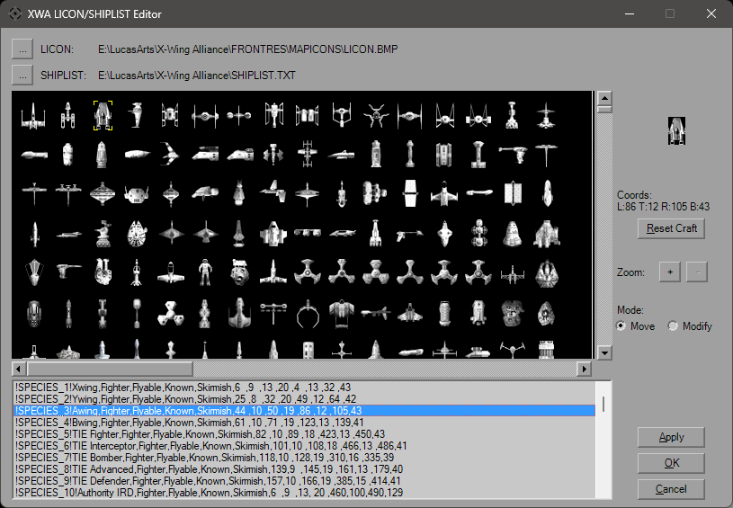

Licon/Shiplist Editor

This form permits editing the map/briefing icons in XWA.
It will first try to load the LICON.BMP and SHIPLIST.TXT based on the mission's location, before defaulting back to the installed platform's location. At any time, you can choose to load files from a different location, and the changes will be applied to the loaded Shiplist.
The Zoom has 3 levels, 1x, 2x, and 4x. "Move" mode simply allows you to drag the image around. There's also the scroll bars that will move the image. Selecting a craft in the list will auto-scroll so it's in view, but you can scroll away.
"Modify" mode is where you can drag the borders. Edge drag and corner drag are available, the cursor will change accordingly. When dragging from the center, the outline remains the same size and moves as one. Attempting to drag it off the image will halt the move. The rest of the form will update as you drag. If you don't like your changes, you can use the "Reset Craft" button to restore the borders to where they were when the Shipist was opened.